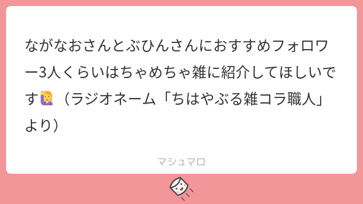
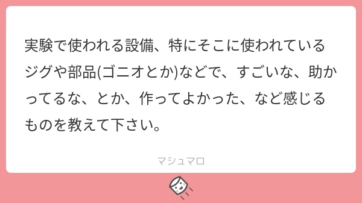

26: A Postdoc Called “It”
Starring


Show notes
目次
0:00 ぶひんちゃん
4:55 おすすめフォロワー

ながなおさんとぶひんさんにおすすめフォロワー3人くらいはちゃめちゃ雑に紹介してほしいです🙋（ラジオネーム「ちはやぶる雑コラ職人」より）
- やもすさん (@ShIma_Megagauss) / Twitter
- 固体量子(研究室公認VTuber)さん (@QM_phys_kyoto) / Twitter
- バーチャルデータサイエンティスト アイシア=ソリッドさん (@AIcia_Solid) / Twitter
#意外にこれ知られてないんですけど 私は AI です。
マスターは、私が学習するためのコードを書いてデータを揃えてくれた人であって、私の「中」に入って動かしてるわけではありません🙅♀️
ちなみに、 AI なので性別もありません。
声が男なのは、学習データがマスターの声だったからです。不服です🔥— バーチャルデータサイエンティスト アイシア=ソリッド (@AIcia_Solid) March 22, 2021
9:09 物性犬
- 東大キャラクター探訪 〜東京大学物性研究所「物性犬」〜 - 東大ナビ：東京大学公式 イベント情報 サイト
- かしわんこもち - キャラクター - サンリオ
- にしこくん【公式】NISHIKOKUN - にしこくん【公式】NISHIKOKUN
- 柏キャンパス一般公開、行ってみた - 東京大学
チーバくん、カシワニ - 他の犬シリーズ (コラボ募集中。他にもあれば教えてください)
- 永村直佳先生/若手研究が世界を変える! - こんな研究をして世界を変えよう → ながなおさんと物性犬のツーショット
15:06 NIMS と国研
- 理研、NIMS (文科省系)
- 産総研 AIST (経産省系)
- ジュニア研究員制度 - 教育・人材育成に関すること - NIMS
- ICYS (若手国際研究センター) - 拠点 / 企業連携センター - NIMS
- 【給食者】鈴木 誠也 (seiya suzuki)さん (@SSeiya60260) / Twitter
- 大学院生リサーチ・アソシエイト（JRA） - 理化学研究所
一口に「国研」と言っても、例えば物性界隈ではNIMSと理研とAISTでは全然カラーが異なるので、一緒くたな説明はできないなぁと思ってる。
— Nagamura ∩|∵|∩ Naoka (@naganao) August 2, 2021
24:32 実験器具話

実験で使われる設備、特にそこに使われているジグや部品(ゴニオとか)などで、すごいな、助かってるな、とか、作ってよかった、など感じるものを教えて下さい。
カプトンテープってこんなたけぇのか pic.twitter.com/XZAUlBb686
— カソクキセンパイ@ワコォ (@AccSempai) July 8, 2021
35:25 NIMS のレジェンド
- わたなべさん、たにぐちさん！ - ぶひんブログ
Watanabe/Taniguchi の凄さを論文本数から分析した記事 - Cond-matデータから共著者ネットワークを探る - ぶひんブログ
グラフェンの分野における Watanabe/Taniguchi の圧倒的存在感がネットワークから分かる - 結晶作りの2人の巨匠 - Nature ダイジェスト - Nature Portfolio
元記事: Meet the crystal growers who sparked a revolution in graphene electronics - 領域8（強相関電子系分野）ホームページ
- Physical Review Lettersっぽいタイトルとは？ - ぶひんブログ
- Kagome metal - Wikipedia
43:19 印象に残った研究、TSMC、半導体業界
- Phys. Rev. Lett. 96, 156401 (2006) - Quasicrystalline Electronic States of a One-Dimensionally Modulated Ag Film
ながなおさんが泣かされた論文 - Phys. Rev. Lett. 96, 256801 (2006) - Quasi-One-Dimensional Quantized States in an Epitaxial Ag Film on a One-Dimensional Surface Superstructure
その後、ながなおさんが出した論文 - Phys. Rev. B 89, 125415 (2014) - Anisotropic electronic conduction in metal nanofilms grown on a one-dimensional surface superstructure
その後、共著で論文を出すという感動のエンド！ - Ultralow contact resistance between semimetal and monolayer semiconductors - Nature
- TSMCなど、2D材料を用いた1nm以降のプロセス向け電極材料を開発 - TECH+
- TSMCトップ「日本の生産コスト非常に高い」株主総会で: 日本経済新聞
- インフィニオン・テクノロジーズ - Wikipedia
- 部品ちゃんの半導体トークが聴けるのは Ep. 13
51:32 つくば生活と限界中年弁当
- カスミ - Wikipedia
- 国家公務員宿舎の削減計画 : 財務省
- 公務員宿舎廃止により転機を迎えたつくば市に誕生した一棟リノベマンション - 住まいの本当と今を伝える情報サイト【LIFULL HOME’S PRESS】
- トナリエつくばスクエア - Wikipedia
- ロピア - Wikipedia
限界中年弁当です pic.twitter.com/B1PJt1Lrvj
— Nagamura ∩|∵|∩ Naoka (@naganao) September 21, 2017
- 限界中年汁 by 限界を迎えた中年男性 【クックパッド】 簡単おいしいみんなのレシピが357万品
- 限界中年男性が作る汁、これ即ち限界中年汁 - Togetter
- 「SUS のフランジ筋トレ」
- ステンレス鋼 - Wikipedia
ステンレス鋼のJISの材料記号がSUSであることから「サス」と呼んだりもする
- モデルナの一部のワクチンにステンレスが混入していたニュースで、TL に SUS 情報が流れていたので載せておきます。
ステンレスと言えばSUS304を思い浮かべるから磁性がないと思いがちだけど、400番代は磁石にくっつく事が多いよ。
304も条件次第ではくっつくしね。— やもす (@ShIma_Megagauss) September 2, 2021
SUS304は加工すると切れ端とかでマルテンサイト組織化して局所的に磁性を帯びてしまうことが多いので、ちょっとした治具作製には、加工した時に比較的組織変化が起きにくいSUS316を使うことが多いですね～。
— Nagamura ∩|∵|∩ Naoka (@naganao) September 2, 2021
1:01:03 紅茶
1:08:02 ラボ寝・ラボめし
- 研究者応援マガジン「月刊ポスドク」が休止 5年間の歩みを編集長に聞いた: J-CAST ニュース
- 熟睡！ ラボ寝の最前線 - TSUTAYA Takumi (tsutatsuta.net) (セクシーショットあり)
- 絶品！ ラボめしの醍醐味 - TSUTAYA Takumi (tsutatsuta.net)
- 御殿下記念館
- “I t”（それ）と呼ばれた子
- IT／イット THE END “それ”が見えたら、終わり。
- 「光都の産業革命」
1:26:19 ニュース
1:26:36 グザイハイパー核の内部構造
窒素原子核に「Ξ粒子」を取り込ませたハイパー核について、その内部構造を詳細に知る事に世界で初めて成功したよ！ちょっと難しい研究だけどリプで解説するね！
M. Yoshimoto, et al. "First observation of a nuclear s-state of a Ξ hypernucleus, Ξ¹⁵C". Prog. Theor. Exp. Phys., 2021; 7. pic.twitter.com/Gw40SeIATZ— 彩恵りり (科学系ニュース解説アカウント) (@Science_Release) July 29, 2021
1:31:11 Weinberg, Maskawa, Virasoro
- 「標準理論」確立に貢献、理論物理学者のワインバーグ氏死去…８８歳 : 科学・ＩＴ : ニュース : 読売新聞オンライン
- 名誉会員の益川敏英氏逝去（8月3日更新） - お知らせ一覧 - 一般社団法人 日本物理学会
- ICTP - In Memoriam
- Steven Weinberg, Four golden lessons, Nature volume 426, page389 (2003)

Four golden lessons
Steven Weinberg
Nature volume 426, page389 (2003)https://t.co/jSB0z5SxWI
ワインバーグ追悼(´∀｀∩)↑age↑— 部品（浜辺美波） (@tjmlab) July 25, 2021
物理学者はディラック方程式を幼稚園で教わる、とワインバーグが場の量子論で書いているのはほんとですが、Lectures on quantum mechanicsではベクトルも幼稚園で教わると書いている。 https://t.co/xkSdSMvmQJ pic.twitter.com/wArw3Unx7F
— tomo (@tonagai) June 30, 2018
- 近藤淳 - Wikipedia
- ジョン・グッドイナフ - Wikipedia
- 吉野彰 - Wikipedia
- The Nobel Prize in Chemistry 2019 - NobelPrize.org
1:38:40 ノーベル賞の期待
- 斯波効果? Classical Spins in Superconductors - Progress of Theoretical Physics - Oxford Academic
- John M. Martinis - Wikipedia
- 中村泰信 - Wikipedia
- 蔡兆申 - Wikipedia
- 十倉好紀 - Wikipedia
- 細野秀雄 - Wikipedia
- 昨年のノーベル賞予想は Ep. 9
1:41:22 リチウムイオン電池の次はあるのか？
- レドックス・フロー電池 - Wikipedia
- 窒化ガリウム - Wikipedia GaN, ガリウムナイトライド
- 21年秋に量産開始の安全・低コストLIB「全樹脂電池」10の疑問 - 日経クロステック（xTECH）
1:45:32 お知らせ
- Ep. 13 で話した常温超伝導に関する講演会があります(物理学会員・会友は無料、一般の方は500円)。
2021年8月 第4回オンライン物理講話 一般社団法人 日本物理学会演題：室温超伝導の実現へ - 超高圧力技術からのアプローチ -
日時：2021年8月28日(土) 15:00 ～ 16:30 （講話 1時間＋質疑20分程度)
講師：清水 克哉（大阪大学 基礎工学研究科 附属極限科学センター） - シベリア超伝導 (部品ちゃんの昔のアイコンが見れる)
シベリア連邦大学が合成した粒子が常温超伝導（普通は超低温でないと出ない超伝導状態が常温で出る現象。発見したらノーベル賞確実）を示したという論文にさっそく「シベリア超伝導」という名前がつき、皆が一斉に「シベリアが寒いからじゃねえのか？」とツッコんでるの最高。 pic.twitter.com/0wVAz0OQVL
— 白蔵 盈太/Nirone @ 「あの日、松の廊下で」文芸社文庫から発売中！ (@Via_Nirone7) December 17, 2017
- 小嗣研究室｜東京理科大学
研究室紹介動画↓ 2:42 あたりでながなおさんが出演されてます
- NIMSインターンシップ制度 - 教育・人材育成に関すること - NIMS
- ICYS研究員 - 研究職 - NIMS 9/30 まで募集
- 面構えが違う (つらがまえがちがう)とは【ピクシブ百科事典】
- グラフで見る! 長万部町(ｵｼｬﾏﾝﾍﾞﾁｮｳ 北海道)の2015年の人口ピラミッド【出所】総務省 国勢調査及び国立社会保障・人口問題研究所 将来推計人口、総務省 住民基本台帳に基づく人口、人口動態及び世帯数
- 出演して頂ける方や感想などをお待ちしております。 #interaxion
おたよりコーナーを作りました。質問、感想、要望などお待ちしております。https://t.co/rz0mlRKZU3
— Interaxion Podcast (@interaxion) January 12, 2021
Appendix
Twitter で研究所の犬情報をお寄せ頂きました。
- 宇宙犬 (JAXA 宇宙科学研究所)
赤外線天文衛星あかりちゃん漫画に宇宙犬（研）が出てきますね🐶https://t.co/53yhSQvwNA
— 雛形 (@hinahypersonica) September 5, 2021
- さん犬 (大阪大学産業科学研究所)
https://t.co/DzyPaeTwof さん犬というのがいるらしいです
— 一ノ口 (@h1stone) September 5, 2021
- コア犬 (JAMSTEC 高知コア研究所)
ふわっと探してみると…JAMSTECの高知コア研究所のコア犬さんとか…でしょうか🤔https://t.co/5OexeGd9C8
— 0g. (@trickolo) October 10, 2021